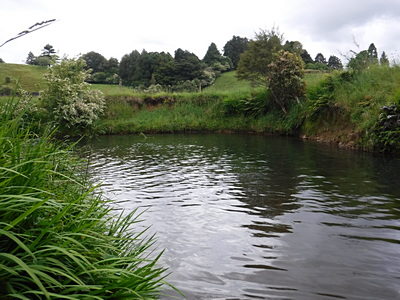

釣行日誌 ＮＺ編 「一期一会の旅：A Sentimental Journey」
驚きの出会い
11/30(FRI)-1
今朝はゆっくり７時過ぎに起きた。朝食をいただき、荷物をパッキングする。今夜からはハミルトン郊外にお住まいの田島さん宅にお世話になるのだ。今回の旅でも、留学中にお世話になった方々の家から家へと居候のハシゴ状態で、皆様には本当にお世話になってばかりである。
田島さんの奥さんからは、朝の11時頃に来てほしいとのことだったので、大林さんご夫妻に丁重にお礼を述べ、９時半に出発した。またショッピングモールに寄り、ポストショップ兼本屋さんで、日本へのお土産を発送するための段ボール箱とカレンダー各種を買い込む。途中、ワイカト川の西岸に出てから少し迷ったものの、何とか見覚えのある大きな教会の建つ丘を越え、田島さん宅に着いた。ご夫妻に挨拶をして、用意してくださった客間に例の大荷物を運び入れる。この部屋のベッドはエアーベッドだから、もし柔らかすぎたらここのスイッチを入れて空気を補充してねと教わる。ウォーターベッドというのは聞いたことがあったが、エアーベッドは初めてである。ふ～んと感心する。
奥さんは昼前に用足しに出かけられ、田島さんと２人で、ご主人お手製の卵とじ肉そばをいただく。田島さんの近況はフェイスブックで知っていたので、８年ぶりという感じは全く無いが、それでも直に話を交わすとそれなりの年月が経ったことを知らされる。前回は大学生だった息子さんも勤め出して独り暮らしを始めており、上のお嬢さんはすでに結婚され、下のお嬢さんはタウランガに住んでいるそうだ。僕が大学に行っていた頃は、３人のお子さん方を小学校まで迎えに行ったり、タウポのキッズ・フィッシングデーに一緒に行ったこともあったので、感慨深かった。
お昼をいただいてくつろいでいると、奥さんが帰ってこられて、用事があるのでこれからお二人でオークランドまで出かけるとのこと。夕食は自分で手配しますのでお構いなくと告げ、こちらも釣り支度をして出かける。午後２時半頃にピロンギアの小さな町に着き、ベーカリーにてまたしてもサンドイッチを買い込む。昔は若干くたびれた感のあった店がすっかり立派になっていて驚いた。まぁ20年も経てば町の様子も変わるわなぁ。
少し国道を戻って、印刷してきた地図を頼りに山の北側から流れ出す山岳渓流を目指す。グネグネと曲がった道路が舗装されていることにも驚かされた。昔は砂埃モウモウの砂利道だったのに。何から何まで浦島太郎状態である。今日の川は、僕がニュージーランドで初めて自力で見つけ出した渓流であり、渓相も日本のようで気に入り、その上釣果も良く、思い入れの深い川なのだ。もっとも当時からフィッシュアンドゲームのパンフレットには詳細な案内記事があったのだが。
お目当ての駐車場に着いてみると、金曜日の午後ということもあってか車が６台も停まっている。とりあえずトイレを済ませておこうかと、整備されている公衆トイレに向かう途中、車のトランクを空けてズボンを着替えている中年男性（おそらく僕よりは年下（笑））がいた。トランクをチラッと一瞥すると、パックロッドのケースが見えた。
『おっ！フライフィッシャーマンだ！』
いささかの動揺をおくびにも出さず、にこやかに話しかけてみる。この川はフライフィッシングオンリーなので、ロッドを持っていればフライフィッシャーマンのはずなのだ。
「ハーイ！ こんちは！ 釣れましたか？」
「ハイ！ いやぁそれが、ここから４、５kmは釣り上がってみたんだが、淵には鱒の姿が１尾も見えなかったよ....」
と、その釣り人は残念そうに答えてくれた。
『フフ。オジさん。この川は川底が茶色だし水も少々濁っているので、めったなことではサイトフィッシングは無理なのですよ....』
と、喉まで出かかったのをぐっとこらえ、
「それは残念でしたねぇ。」
よくよく話を聞いてみると、この紳士は奥さんと二人で、アメリカから３ヶ月！ のホリデーを楽しむべくニュージーランドを訪れているそうで、タウポ、ロトルア地方と釣り歩き、今日はこれからハミルトンの宿に帰るそうだ。
『アメリカからはるばるこの辺境の川に！ この川も国際化したものだなぁ！』
通い慣れたこの川で他の釣り人と出会ったことは１回しか無かったので、自分のことは棚に上げて、心底驚いた。肝心の釣果は聞きそびれたが、トイレに急ぎたかったので、別れを告げて公衆トイレに急いだ。
トイレを出て一息ついてみると、あの紳士夫妻の車はもう無かった。
『さて、どうしようか....』
おそらく彼は川沿いの散策道をここから上流へと歩きながらめぼしい淵で鱒の姿を探して行ったのだろうが、竿を出していないとは思えなかったので、河岸を変えて、下の区間を攻めてみることにした。
立派に舗装された農道を1.5kmほど下り、右へ入る脇道を見つけ、車を乗り入れる。時刻は午後３時過ぎ。このあたりは在学中にもほとんど釣ったことは無い。ところが橋を渡ってみると、フィッシュアンドゲームの釣り場案内看板がしっかり立てられている。
『ほほぉ～！ やっぱり人気河川になったのだなぁ....』
案内看板曰く、
---------------------------------------
フライフィッシングオンリー
解禁期間 10月１日～６月30日
制限引数 ５尾
体調制限 300mm以下は放流
---------------------------------------
昔はこんな立派な看板は無かったなぁと、追憶の遠い目をして看板を見やり、いったん戻って橋向こうの空き地に車を停め直す。スタックしないよう、気を付けて前輪駆動の赤いカローラを草地に乗り入れ、いそいそと釣り支度を始める。
橋の下の大淵を覗いてみると、渦を巻いて流れる水は昔の通り少し茶色味が付いており、あいにくの曇天でもあることから、僕の眼力ではライズが無い限り鱒を見つけるのはとても不可能に思えた。
さりとてライズ探しで遡行しても、さっきの駐車場までくまなく探して見たところでスカを喰らう可能性は高かった。ましてや鱒の姿を見つけるのは不可能である。
ここはひとつ、伝家の宝刀（笑） のブラインドフィッシングでそれらしいポイントを探って行こう！と決め、3X12ftのリーダーに一ヒロの3Xティペットを継ぎ足し、何より見やすいロイヤルウルフの12番を結ぶ。今日も眼鏡型ルーペが欠かせない。橋の下手には釣り人が踏み固めた跡が残っており、楽に岸辺まで降りられた。少々持て余し気味であったが、鱒に気取られぬようロングリーダーで攻めてみる。ロッドは旧いUFMの4-5番指定のパックロッドである。

橋下の大淵のカーブ、流水が当たる付近にドライフライが浮かび、ゆらゆらと流れて行くが水面は割れない。コケが付いて非常に滑りやすい河床をゴム底のウェーディングシューズで苦労しながら遡行し、次の有望そうなポイントへと移動する。川の両岸には大木が並んでおり、枝が被さっているのでキャストしにくいことこの上ない。
釣行日誌ＮＺ編 目次へ
サイトマップ
ホームへ
お問い合わせ